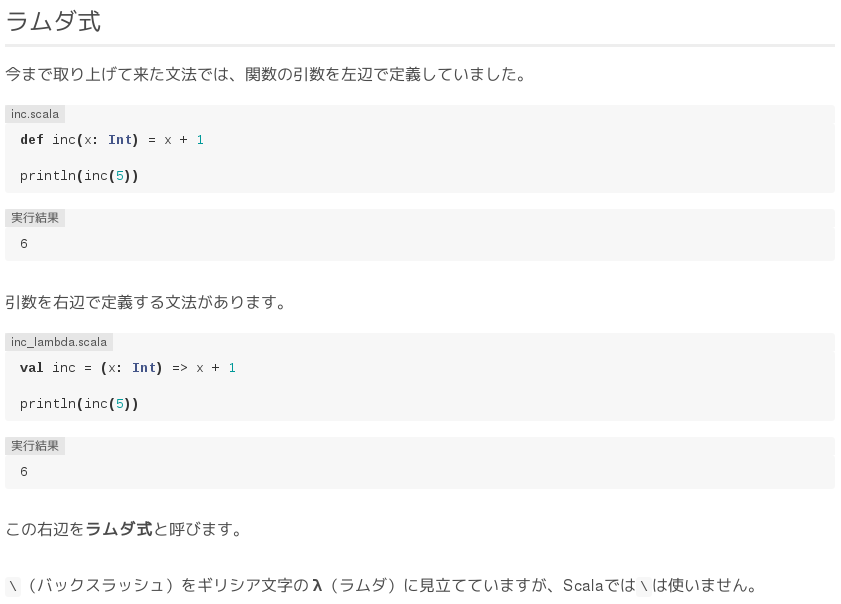
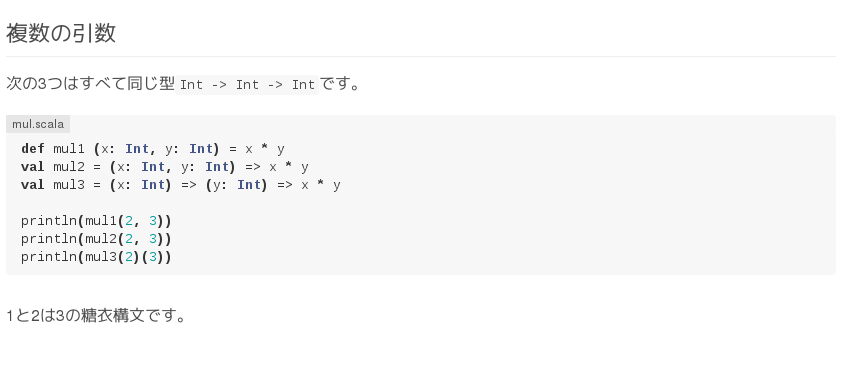
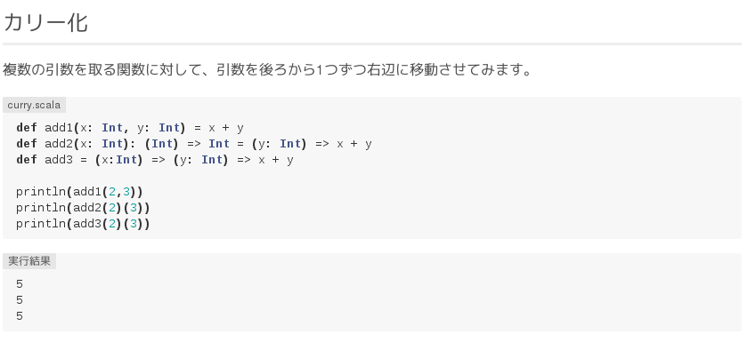
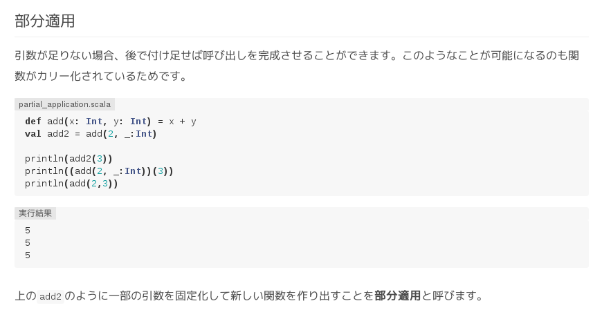
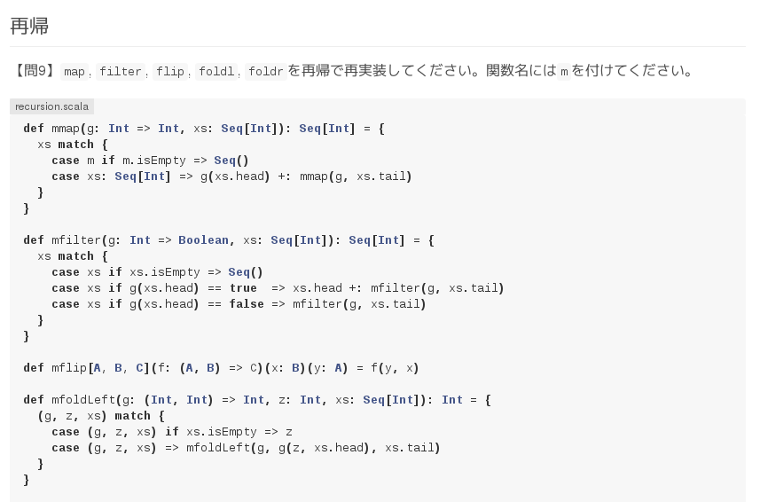
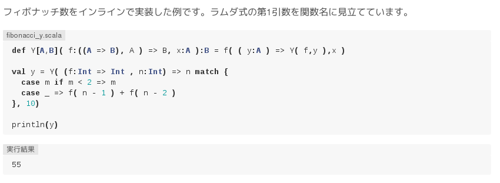

Your browser doesn't support the features required by impress.js, so you are presented with a simplified version of this presentation.
For the best experience please use the latest Chrome, Safari or Firefox browser.
Scalaでラムダをいろいろ @shigemk2

最近関数型の本とか出たので
Qiitaに書いた
ラムダ式や高階関数を使って関数を取り回す
カリー化や部分適用
いわゆる関数型言語らしい機能をごにょごにょ
Haskellラムダ超入門を移植したやつです
http://qiita.com/7shi/items/1345bf32003faff435cb
なんでこんなの書いたの
関数型言語とかコンパイル言語とかやったことないから、Scalaをちょっと頑張ってみたくなった
ではスタート
きほん

インライン
println(((x: Int) => x + 1)(1))
高階関数



再帰で再実装とか

バブルソートとか

Yコンビネータとか

まとめ
ちょっとだけScalaわかってきた
他の言語から移植するのは頭のトレーニングとしては良いと思う
マサカリがあればください